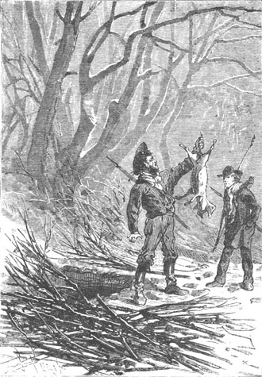
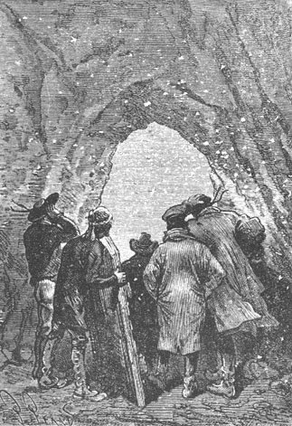
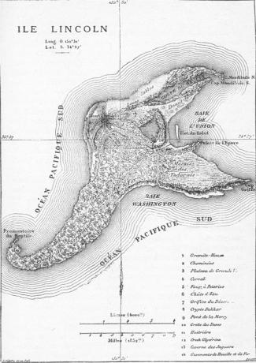

This intense frost lasted until the 15th of August without however dropping below the temperature already noted. When the weather was calm, this low temperature was easily tolerated but when the cold wind blew, it was hard on these insufficiently dressed men. Pencroff regretted that Lincoln Island had not given sanctuary to several families of bears instead of foxes or seals, whose fur leaves much to be desired.
“Bears,” he said, “are generally well dressed, and I will ask nothing more of them than to borrow for the winter the warm cloaks which are on their bodies.”
“But,” replied Neb laughing, “perhaps these bears will not consent, Pencroff, to give you their cloaks. These animals are not Saint-Martins!”
“We will compel them, Neb. We will compel them,” replied Pencroff, in a completely authoritative tone.
But these formidable carnivores did not exist on the island, or at least they had not shown themselves until then.
Nevertheless, Herbert, Pencroff and the reporter made traps on Grand View Plateau and at the approaches to the forest. In the sailor’s opinion, every animal, whatever it be, would be a good prize, and the rodents or carnivores who would use the new traps would be well received at Granite House.
Besides, these traps were extremely simple: Holes dug in the ground, a platform of branches and grass above to hide the opening, some bait at the bottom whose odor would attract the animals, that was all. It should be said that these traps were not dug at random but at certain places where numerous footprints indicated the frequent passage of quadrupeds. They were visited every day. Three times during the first days they found specimens there of the colpeos that had already been seen on the right bank of the Mercy.
“Are there nothing but foxes in this country?” cried Pencroff, the third time that he pulled out one of these animals from the pit. He was very crestfallen. “These animals are good for nothing.”
“But yes,” said Gideon Spilett. “They are good for something.”
“And what is that?”
“To make bait to attract others.”
The reporter was right and the traps were henceforth baited with the corpses of the foxes.
The sailor also made collars using juncus fibers and the collars were more profitable than the traps. It was a rare day without some rabbit captured from the warren. It was always rabbit, but Neb knew how to vary his sauces and the guests did not dream of complaining. However one or two times, in the second week of August, the traps delivered to the hunters other animals more useful than the colpeos. There were several of these wild boars that had already been sighted to the north of the lake. Pencroff had no need to ask if these animals were edible. This was obvious from their resemblance to the pigs of America or Europe.
The sailor leaned over the trap. By the small appendage which serves it as a tail, he took out one of these representatives of the suilline family.
“But these are not pigs. I warn you, Pencroff,” Herbert said to him.
“My boy,” replied the sailor, “let me believe that these are pigs.”

“Let me beleive...” said Pencroff.
“And why?”
“Because it pleases me.”
“You really like the pig, Pencroff?”
“I love the pig a lot,” answered the sailor, “especially for its feet, and if it had eight feet instead of four I would love it twice as much.”
As to the animals in question, they were peccaries belonging to one of the four genuses that make up the family. They were indeed of the “tajacu” species, recognizable by their dark color and deprived of those long canine teeth that arm the mouths of their congeners. These peccaries ordinarily live in groups and it was likely that they abounded in the wooded parts of the island. In any event they were edible from head to toe and Pencroff asked nothing more of them.
About the 15th of August, the weather was suddenly changed by a northwest wind. The temperature rose several degrees and the accumulated vapor in the air was not long in changing to snow. The entire island was covered with a white layer and showed itself to its inhabitants under a new aspect. This snow fell abundantly for several days and soon attained a thickness of two feet.
The wind soon freshened with an extreme violence and from the height of Granite House they could hear the sea growling on the reef. There were rapid eddies of air in certain corners and the snow, forming in tall rotating columns, resembled those waterspouts which twirl at their base and which vessels attack by cannon fire. The storm however came from the northwest, taking hold of the island from the rear. The orientation of Granite House preserved it from a direct assault. But in the midst of this snow blast, as terrible as if it was produced in some polar country, neither Cyrus Smith nor his companions were able, in spite of their desire, to venture outside and they remained shut up for five days, from the 20th to the 25th of August. They heard the tempest roar in Jacamar Woods which was sure to suffer from it. Doubtless many trees would be uprooted but Pencroff consoled himself by thinking that it would save him the trouble of cutting them down.

From the height of Granite House.
“The wind is woodsman, let it work,” he repeated.
And besides, he had no means of restraining it.
What thanks the hosts of Granite House then gave to heaven for having made for them this solid and steadfast retreat! Cyrus Smith deserved a legitimate part of these thanks but after all, it was nature that had excavated this vast cavern and he had only discovered it. There, all were safe and the storms could not reach them. If they had constructed a house of bricks and wood on Grand View Plateau, it would certainly not have resisted the fury of this storm. As to the Chimneys, the noise made by the waves led them to believe that it was absolutely uninhabitable because the sea, passing over the islet, must beat it with rage. But here, in Granite House, inside this block, neither water nor air could harm them and there was nothing to fear.
During these days of sequestration the colonists did not remain inactive. Wood, cut into planks, was not lacking in the storeroom and little by little they completed the furniture. The tables and chairs were sturdy, to be sure, because material was not spared. This somewhat heavy furniture hardly justified its name since mobility is an essential condition but Neb and Pencroff were proud of it and would not have exchanged it for any other.
Then the woodworkers became basketmakers and they did not succeed badly at this new task. They had discovered, near a corner of the lake that projected northward, a prolific osier bed where a large number of purple osiers grew. Before the rainy season, Pencroff and Herbert had harvested these useful bushes and their branches were used well. The first attempts were shapeless but thanks to the skill and intelligence of the basket makers who, consulting, recalling the models they had seen, emulating each other, some large and small baskets soon accrued to the colony. The storeroom was provided with them and there Neb stored his harvest of rhizomes, pine almonds and the roots of the dragon tree.
During the last week of this month of August, the weather changed once more. The temperature dropped a little and it became calm. The colonists went outside. There was certainly two feet of snow on the beach but the surface of this snow was hard so they could walk on it without much difficulty. Cyrus Smith and his companions climbed to Grand View Plateau.

What a change! These woods which they had left green, especially the neighboring parts where the conifers dominated, had disappeared under a uniform color. All was white from the top of Mount Franklin to the shore, the forests, the prairie, the lake, the river, the beaches. The water of the Mercy ran under a canopy of ice which broke up at each rise and fall of the tide, shattering loudly. Numerous birds fluttered on the solid surface of the lake, ducks and woodcocks, pintails and guillemots. Thousands were there. The rocks between which the cascade poured out on to the beach, bristled with ice. It could be said that the water escaped from a monstrous gargoyle made with all the fantasy of a renaissance artist. As to judging the damage done to the forest by the storm, they still could not do it, and it would be necessary to wait until the immense white layer was dissipated.
Gideon Spilett, Pencroff and Neb used this occasion to visit their traps. They could not find them easily under the snow which covered them. They had to take care not to fall into one or the other. This would have been simultaneously dangerous and humiliating: to be caught in one’s one trap! But they avoided this unpleasantness and found the traps perfectly intact. No animal had fallen in, but there were many footprints all about including certain clearly revealed claw marks. Herbert did not hesitate to affirm that some carnivore of the feline genre had passed there. This justified the engineer’s opinion on the presence of dangerous beasts on Lincoln Island. Doubtless these animals ordinarily inhabited the thick forests of the Far West but pressed on by hunger, they had ventured up to Grand View Plateau. Perhaps they smelled the hosts of Granite House.
“In short, what kind of felines are these?” asked Pencroff.
“They are tigers,” replied Herbert.
“I believe that these animals are found only in warm countries.”
“On the new continent,” replied the lad, “they are observed from Mexico to the pampas of Buenos Aires. Now, since Lincoln Island is very nearly on the same latitude as the province of La Plata, it is not astonishing that several tigers are encountered here.”
“Good, we will keep an eye out for them,” answered Pencroff.
However, the snow ended by dissipating under the influence of the rising temperature. Rain fell and thanks to its dissolving action the white layer disappeared. In spite of the bad weather, the colonists renewed their reserve of everything, pine almonds, dragon tree roots, rhizomes, maple syrup for the vegetable part; rabbits from the warren, agoutis and kangaroos for the animal part. This necessitated several excursions into the forest and they noted that a certain quantity of trees had been thrown down by the last storm. The sailor and Neb even hauled the cart up to the coal bed in order to bring back several tons of fuel. They saw in passing that the chimney of the pottery furnace had been extensively damaged by the wind and that at least six feet had been knocked off the top.
The provision of wood was also renewed at Granite House at the same time as the coal and they profited by the current of the Mercy, which had become free, to bring in several loads. They could see that the period of severe cold was not over.
A visit was also made to the Chimneys and the colonists could only congratulate themselves that they had not lived there during the storm. The sea had left incontestable marks of its ravages. Driven on by the open winds and passing over the islet, the sea had violently assailed the passageways which were half buried in the sand. Thick layers of seaweed covered the rocks. While Neb, Herbert and Pencroff hunted or renewed the supply of fuel, Cyrus Smith and Gideon Spilett cleaned up the Chimneys, finding the forge and the furnace almost intact, protected from the first by the sand covering.
The fuel had not been renewed in vain. The colonists had not finished with the rigorous frost. As is known, in the northern hemisphere, the month of February is noted for its large drops in temperature. It is the same in the southern hemisphere and the end of the month of August, which is the February of North America, did not escape this climatic law.
About the 25th, after a new change between snow and rain, the wind blew from the southeast and suddenly the cold became extremely brisk. According to the engineer’s estimate, the column of mercury on a Fahrenheit thermometer would not have marked less than 8° below zero (22.22° centigrade below freezing). Rendered more painful by the sharp wind, this intense frost kept up for several days. The colonists were again shut up in Granite House. Since it was necessary to hermetically seal all openings of the facade leaving only a small passage for the renewal of air, the consumption of candles was considerable. In order to economize them, the colonists often used only the light from the fireplace where they did not spare the fuel. Several times one or the other descended to the beach amid the ice floes that piled up with each tide but they soon climbed back to Granite House and it was not without pain and without suffering that their hands held on to the rungs of the ladder. With this intense frost, the rungs burnt their fingers.
It was again necessary to occupy the leisure imposed on the hosts of Granite House. Cyrus Smith then undertook an operation suited to indoors.
We know that the colonists had no sugar other than this liquid substance that they drew from the maple by making deep incisions in this tree. It sufficed for them to collect this liqueur into vases and they used it in this state for various culinary uses, so much the more that on aging the liqueur tended to become white and took on a syrupy consistency.
But there was something better to make and one day Cyrus Smith announced to his companions that they were going to become refiners.
“Refiners!” replied Pencroff. “That is a somewhat warm profession, I believe.”
“Very warm,” replied the engineer.
“Then it will be in season,” answered the sailor.
The word refining should not bring to mind complicated factories, tools and workmen. No! To crystalize this liqueur, it suffices to purify it by an extremely easy operation. Placed on a fire in large earthen vases, it was simply subjected to a certain evaporation and soon a scum rose to the surface. When it began to thicken, Neb took care to stir it with a wooden spatula, which accelerated its evaporation and at the same time prevented it from acquiring an empyreumatic taste.
After boiling for several hours on a good fire, which did as much good to the operators as to the substance operated on, it was transformed to a thick syrup. This syrup was poured into clay molds previously made in the same kitchen stove, and to which they had given various shapes. The next day this syrup solidified, forming cakes and tablets. It was sugar of a slightly reddish color but nearly transparent and with a perfect taste.
The frost continued to mid-September and the prisoners of Granite House began to find their captivity rather long. Nearly every day they made several sorties which they could not prolong. They therefore worked constantly on the arrangements for the dwelling. They chatted while working. Cyrus Smith instructed his companions in all things and principally he explained to them the practical applications of science. The colonists did not have a library at their disposal, but the engineer was a book that was always ready, always open to the page that each one needed, a book which answered all their questions and which they often leafed through. So the time passed and these brave men had no doubts about the future.
However, it was time for their confinement to end. All were in a hurry to see, if not the fine season, at least the end of this insupportable frost. If only they had been dressed in a way to be able to brave it, what excursions they would have made either to the dunes or to Tadorn Marsh. The game would have been easy to approach and the hunt would have assuredly been fruitful. But Cyrus Smith maintained that no one should compromise his health since he had need of all hands, and his advice was followed.
But, it must be said, the most impatient of the prisoners, after Pencroff of course, was Top. The faithful dog found Granite House too confining. He came and went from one room to the other, showing from his manner, his boredom in being cooped up.
Cyrus Smith often remarked that when he came near the gloomy well which was in communication with the sea and whose opening was at the base of the storeroom, that he made singular grunts. Top turned around this hole which had been covered with a wooden panel. Sometimes he even tried to slip his paws under this panel as if he wanted to lift it. He then yapped in a particular way which indicated anger and uneasiness at the same time.
The engineer observed this behavior several times. What was there in this abyss that could impress the intelligent animal? The well led to the sea, that was certain. Did it also branch out through narrow passageways across the framework of the island? Was it in communication with several other interior cavities? Did some marine monster come from time to time to breath at the bottom of this well? The engineer did not know what to think and he couldn’t help but imagine bizarre complications. Accustomed to the domain of scientific reality, he could not pardon himself for drifting into the domain of the strange and almost supernatural. Top was one of those sensible dogs who did not waste their time in barking at the moon but how could he explain why the dog insisted on probing this abyss with his smell and hearing if there was nothing to arouse his uneasiness? Top’s conduct intrigued Cyrus Smith more than he admitted to himself.
In any case, the engineer communicated his impressions only to Gideon Spilett, finding it pointless to tell his companions about these involuntary thoughts that arose within himself and which perhaps were due only to Top’s whims.
At last the frost ended. There was rain, squalls mixed with snow, showers and windstorms, but this bad weather did not last long. The ice dissolved, the snow melted; the beach, the plateau, the banks of the Mercy and the forests became passable once again. The return of springtime delighted the hosts of Granite House and soon they passed there only the hours for sleeping and for meals.
They did a lot of hunting in the second half of September which brought Pencroff to call again for firearms which he said had been promised by Cyrus Smith. The latter, knowing well that without special tools it was almost impossible to make a gun that would be of service, always held back and put off the operation for a later time. He noted, moreover, that Herbert and Gideon Spilett had become skillful archers, that all sorts of excellent animals, agoutis, kangaroos, capybaras, pigeons, bustards, wild duck, snipe, in short that hairy or feathery game fell under their arrows and consequently that they could wait. But the obstinate sailor would not hear of it and did not cease to remind the engineer that he had not satisfied his desire. Besides, Gideon Spilett seconded Pencroff.
“If the island, as we have no reason to doubt,” he said, “contains ferocious animals, we should think of fighting them and exterminating them. A time may come when this will become our first duty.”
But at this period, it was not this question of firearms which preoccupied Cyrus Smith but that of clothing. The colonists had passed the winter with those that they wore, but these would not last until the next winter. They would have to procure the furs of some carnivores or the wool of ruminants at any price. Since there was no lack of sheep, it would be advisable to start a flock which would be raised for the needs of the colony. An enclosure for domestic animals, a poultry yard laid out for the fowl, in a word a sort of farm to establish at some point on the island, such were the two important projects to execute during the fine season.
Consequently, and in view of these future establishments, it thus became urgent to conduct a reconnaissance of all the unknown parts of Lincoln Island, that is to say in the deep forests which extended on the right of the Mercy from its mouth to the extremity of Serpentine Peninsula, as well as all of the western shore. But better weather was needed and a month must pass before this exploration could be properly undertaken.
They therefore waited with some impatience when an incident occurred which further excited the desire of the colonists to visit their entire domain.
It was the 24th of October. On this day Pencroff had gone to visit the traps which he always kept decently baited. In one of these he found three animals which would be welcome back home. It was a female peccary and her two young ones.
Pencroff returned to Granite House, enchanted with his capture and, as usual, the sailor made a big show over his hunt.
“Come! We will make a good meal, Mister Cyrus,” he cried. “And you too, Mister Spilett, you will eat it!”
“I do so want to eat,” replied the reporter, “but what is it that I will eat?”
“Piglet.”
“Ah, really, piglet, Pencroff? To hear you speak, I would think you were bringing a young truffled partridge!”
“How’s this?” cried Pencroff. “Are you perchance making fun of my piglet?”
“No,” replied Gideon Spilett, without showing any enthusiasm, “provided one does not overdo it...”
“That is good, that is good, Mister journalist,” retorted the sailor, who did not like to hear his hunt depreciated. “You are difficult. And seven months ago, when we landed on the island, you would have been very happy to meet with similar game!...”
“There, there,” replied the reporter. “Man is never happy nor content.”
“Well,” replied Pencroff, “I hope that Neb will distinguish himself. Look! These two young peccaries are not even three months old! They will be as tender as quails. Come Neb, let’s go. I will oversee the cooking myself.”
And the sailor, followed by Neb, went into the kitchen where they became absorbed in their culinary labors.
They did it their way. Neb and he then prepared a magnificent meal, the two young peccaries, a kangaroo soup, a smoked ham, some pine almonds, dragon tree beverage, some Oswego tea, in short, the best of everything; but the best of all the dishes was the savory peccaries, prepared braised.
At five o’clock dinner was served in the hall of Granite House. The kangaroo soup was smoking on the table. They found it excellent.
After the soup came the peccaries which Pencroff wanted to slice himself. He served monstrous portions to each of his fellow diners.
These piglets were truly delicious and Pencroff devoured his portion with gusto when all of a sudden a cry and an oath escaped him.
“What is it?” asked Cyrus Smith.
“It’s... It’s... I broke a tooth!” replied the sailor.
“So! Are there are pebbles in your peccaries?” asked Gideon Spilett.
“I think so,” replied Pencroff, drawing from his lips the object which had cost him a molar!...
It was not a pebble... It was a lead bullet.